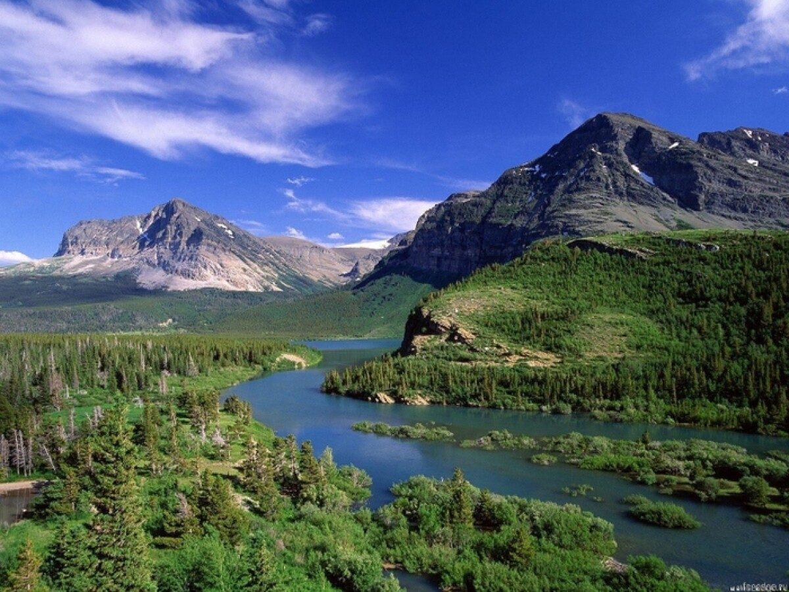

Before you goRoute & navigation
Download offline maps, tell someone your route and check road conditions before leaving.

Use practical checklists, respect nature and keep a clear plan when travelling beyond major cities.

Before you goDownload offline maps, tell someone your route and check road conditions before leaving.
 Remote areas
Remote areasCarry enough drinking water, food, a charged power bank and basic emergency supplies.
 Responsible travel
Responsible travelTake your waste with you, protect fragile formations and stay on established routes where possible.
Late spring and early autumn are comfortable for many destinations, while mountain lakes are usually best in summer.
For Bozzhyra, remote plateaus and some mountain routes, a reliable 4x4 vehicle is strongly recommended.
Prepare offline maps in advance and keep important route information saved on your device.
Use Hidden Gems to search and filter, then open Trip Planner for a simple recommendation and weather check.
Use the planner to get a destination suggestion, check current weather and submit a travel request.
Open Trip Planner